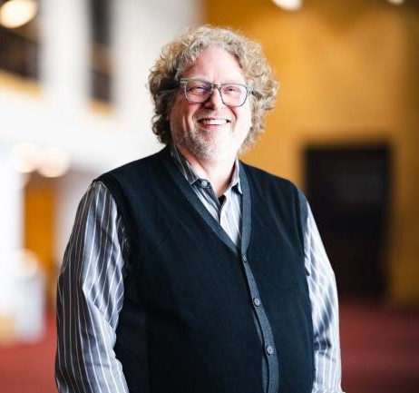

The Director
Dr. Darin Lewis started his musical career as a pianist, graduating with honors from University of Southern California, doing post-graduate studies at the Royal Northern College in Music on a Rotary Scholarship, and returned to Yale to earn his Master of Music degree in Piano Performance. He then earned a Master's in Composition, at CCNY, studying with David Del Tredici. After teaching in New York for almost 20 years, Dr. Lewis earned his Doctorate in Music Education from Boston University. As a pianist, he has performed throughout the U.S and England. As a published composer he has had his works performed and premiered at Alice Tully Hall and Carnegie Hall and in Boston by the Boston Pops. As a conductor he has conducted throughout Europe including concerts in Vienna, Rome, Florence, Paris, Barcelona, Prague, Hallé, Budapest, and in 2017 led the Marching 97 in concert at Cadogan Hall in London.
Past Directors
- 1924-1945: Dr. T. Edgar Shields
- 1946-1956: LTC William T. Schempf
- 1957-1972: Jonathan Elkus
- 1968: Dr. Albertus L. Meyers
- 1973-1977: James Brown
- 1978-1989: Clark CJ Hamman
- 1990-1995: Casey Teske
- 1993, 1996-2016: Al Neumeyer
- 2017-2021: David Diggs